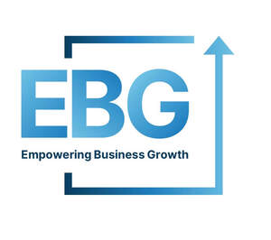
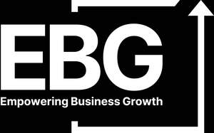

Trade Mark Journal No.2025/049 5 December 2025
UK00004297089 19 November 2025 (35,41)
Mark 1

Mark 2

- Class 35
- Business consulting; Professional business consulting; Consultancy (Professional business -); Professional business consultancy; Business consultancy (Professional -); Business management and consulting; Business management consulting; Business management; Business planning and business continuity consulting; Business consultancy; Business organization consulting; Business organisation consulting; Business organization and management consulting; Business marketing consultancy; Business marketing consulting services; Business organization consultancy; Business organisation and management consulting; Business management and consultancy; Business management consultancy; Business consulting for enterprises; Consultancy regarding business organisation and business economics; Business management and organization consultancy; Business administration consultancy; Consulting services in business organization and management; Business management advice relating to manufacturing business; Business consulting services; Business management and consulting services; Business management consulting services; Advice in the field of business management and marketing; Business process management and consulting; Business marketing services; Business management and enterprise organization consultancy; Professional business consultancy services; Business organisation and management consulting services; Business management consultancy in the field of executive and leadership development; Business management assistance in the field of franchising; Business management services; Business management and organization consultancy services; Business management organisation; Business organization advice; Business management advice; Professional consultancy relating to business management; Business process management consultancy; Business management and consultancy services; Business management consultancy services; Commercial business management; Professional business consultations; Business planning consultancy; Business management and consultation; Business management consultation; Business management and organisation consultancy; Business management organisation consultancy; Business organisation and management consultancy; Business organizational consultation; Business strategy services; Business consultancy services; Providing advice in the field of business management and marketing; Business administration; Business organisation; Strategic business consultancy; Business consultancy to individuals; Business expertise; Business marketing consultation services; Advisory services relating to business management and business operations; Business promotion; Business organization and operation consultancy; Business organisation consultancy; Business networking; Business administration and management; Business management and administration; Business appraisals and evaluations in business matters; Business management and organisation consultancy services; Business planning; Business management for freelance service providers; Evaluations relating to business management in professional enterprises; Business administration services; Advice relating to the business management of fitness clubs; Business management assistance; Assistance (Business management -); Assistance with business management; Business consultation; Business process management; Business strategy development services; Business management planning; Business consulting services in the agriculture field; Business advice; Outsourcing services in the field of business analytics; Business supervision; Business management and consultation services; Business management for a trade company and for a service company; Business planning services; Administration of the business affairs of franchises; Business organisation advice; Business secretarial services; Business brokerage services; Business promotion services; Assistance in franchised commercial business management; Business research consulting.
- Class 41
- Business training; Coaching; Training in business management; Business mentoring services; Business training services; Coaching services; Training in business skills; Training in the field of business management; Business training consultancy services; Personal coaching [training]; Coaching [training]; Life coaching (training); Education and training in the field of business management; Organising of business training; Career counselling and coaching; Coaching in economic and management matters; Training services relating to business management; Conducting of educational courses in business management; Training or education services in the field of life coaching; Education services relating to business franchise management; Education and training services in relation to business management.
EBG Empowering Business Growth LTD